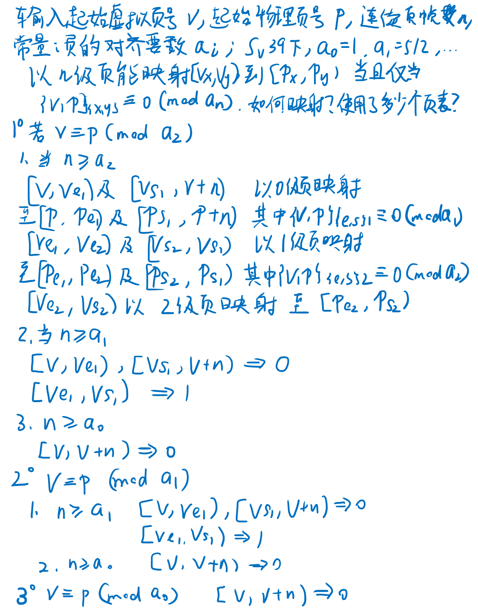

Rust 与 OS | 一种有效的页表系统抽象设计
作者：洛佳 / 后期编辑 ：张汉东
从段进化到页，是操作系统内存抽象的一大进步之处。页式存储管理由软硬件共同实现，软件提供映射关系， 硬件来加速地址翻译的过程。为了更好地设计硬件，往往要求软件页满足一定的数据要求。
这篇笔记尝试梳理软件层次上，页的实现过程。将会包括大页的分配算法，物理地址的对齐，多种分页模式的兼容设计， 以及如何使用泛型、模块化等现代语言技术实现它们。
可能讲得不清楚，请各位看官海涵。
大页分配算法
页式存储系统拥有“大页”的概念。在一些架构下，大页要求地址对齐。 即大页的物理地址必须对齐到特定的级别，随后的低级页号和索引，将共同看作更长的索引使用。 这就对分配算法提出了一定的要求。
归纳需要解决的问题。我们的问题是：给定页表系统M，最大等级为n；对虚拟页号v = (vn-1, ...v1, v0)和待映射连续页数n,
找到一组页的映射集合U = { (v_开始, p_开始, 长度) }，使得页号v能映射到物理页号p。
考虑使用大页优化这一过程，使| U |越少越好，但需要注意对齐要求，即对等级为k的大页，
起始地址为(vn-1, ...vk, 0, ...0)的k-1到0级均为0，即假如k级的对齐要求为a[k]，有v = 0 (mod a[k])。
在M = Sv39系统中，最大等级n = 3，对齐要求a[0] = 1, a[1] = 512, a[2] = 26'2144[注释1]。即，每一级别包含512个页表项。
为了简化问题理解，我们定义一个M = 简单的页表系统，最大等级也为n = 3，但a[0] = 1, a[1] = 4, a[2] = 16。
每一级别包含3个页表项。给定虚拟地址v = (2, 2, 2)到v + n = (5, 2, 1)，要映射到物理地址p = (2, 2, 2)。
现在我们在最高的3级，将要分配r(v) = (2, 2, 2)..=(5, 2, 1)到p = (2, 2, 2)。
如果直接使用大页，将必须保证2、1级的编号都为0。也就是说，只能分配r(v) = (3, 0, 0)..(5, 0, 0)到p = (3, 0, 0)。
为什么不分配(2, 0, 0)..(3, 0, 0)到(2, 0, 0)呢？因为这将分配超过(2, 2, 2)..=(5, 2, 1)的范围，
和我们要求解的问题不同。同理，也不能分配(5, 0, 0)..(6, 0, 0)到(5, 0, 0)。这部分的范围，需要借助更低级的大页来完成。
第3级的分配完成了，然后我们借助2级页表，分配附近零碎的(2, 3, 0)..(3, 0, 0)和(5, 0, 0)..(5, 2, 0)。
分配(2, 3, 0)..(3, 0, 0)到(2, 3, 0)；(5, 0, 0)..(5, 2, 0)到(5, 0, 0)。
最后，借助1级页表，分配(2, 2, 2)..(2, 3, 0)到(2, 2, 2)；(5, 2, 0)..(5, 2, 2)到(5, 2, 0)。
至此，所有的分配完成了。
由于这种方法要求在虚拟的大页上分配物理的大页，两个大页的基地址必须有相同的对齐方式，因此，
初始传入的虚拟页号和物理页号，差值必须对齐到相应的页，即v = p (mod a[k])，才可以使用这种分配方法；否则就应当使用更低等级的分配方法。
（想想看为什么？）否则就会在分配过程中，产生对齐要求的异常。
比如v = (2, 2, 2)到p = (2, 2, 2)，就可以使用3级；而v = (2, 2, 2)到p = (2, 1, 2)，就只能使用2级。

推广这个结论，我们可以得到一个规律。首先，使用贪心的方法，将地址的上下限分别向内取整，分配最大的大页给最高的地址范围。 然后，对两边的零碎范围，使用低1级的页表，继续分配。继续降低等级，直到所有的页都被分配完毕。

根据对齐规则和所需求的页数，逐级降低算法的起始等级。对等级n = 3的页表系统，以分支形式，我们编写顺序规则的伪代码。
#![allow(unused)] fn main() { // input: v: VirtPageNum, p: PhysPageNum, n: usize, a: PageMode; if (v - p) % (a[2].frame_align()) == 0 && n >= a[2].frame_align() { let l2n = (vs2 - ve2) / a[2].frame_align(); map(2, ve2, vs2, ve2-v+p); let l1n = (ve2 - ve1 + vs1 - vs2) / a[1].frame_align(); map(1, ve1, ve2, ve1-v+p); map(1, vs2, vs1, vs2-v+p); let l0n = (n + ve1 - vs1) / a[0].frame_align(); map(0, v, ve1, p); map(0, vs1, v+n, vs1-v+p); } else if (v - p) % (a[1].frame_align()) == 0 && n >= a[1].frame_align() { let l1n = (vs1 - ve1) / a[1].frame_align(); map(1, ve1, vs1, ve1-v+p); let l0n = (n + ve1 - vs1) / a[0].frame_align(); map(0, v, ve1, p); map(0, vs1, v+n, vs1-v+p); } else if (v - p) % (a[0].frame_align()) == 0 && n >= a[0].frame_align() { let l0n = n / a[0].frame_align(); map(0, v, v+n, p); } else { panic!("Can't map v to p under this page mode") } }
我们发现，等级低算法的中间变量，也在等级高的地方出现了。于是这个算法可以改成循环的形式。
#![allow(unused)] fn main() { // input: v: VirtPageNum, p: PhysPageNum, n: usize, M: PageMode; for i in M::visit_levels_until(PageLevel::leaf_level()) { // 遍历顺序：[n, ...1, 0] let align = M::a(i); // i层的对齐要求 if (v - p) % align != 0 || n < align { // 对齐要求达不到等级，或者数量不够，使用低级算法 continue; } let (mut ve_prev, mut vs_prev) = (None, None); for j in M::visit_levels_from(i) { // 遍历顺序：[j, j-1, ...0] let a = M::a(j); // j层的对齐要求 let ve_cur = a * roundup(v / a) let vs_cur = a * rounddown((v + n) / a) if let (Some(ve_prev), Some(vs_prev)) = (ve_prev, vs_prev) { map(j, ve_cur..ve_prev); // 执行映射函数 map(j, vs_prev..vs_cur); } else { map(j, ve_cur..vs_cur); } (ve_prev, vs_prev) = (Some(ve_cur), Some(vs_cur)); } break; } }
这个算法就可以用于任何等级的页表系统了，因此题目要求的算法得到解决。 使用Rust语言的生成器或者迭代器包装算法，即可得到比较好的算法实现。
传统分配算法是，将地址段内的所有地址，映射到最小的页帧上。此时，需要管理多少个页帧，就需要分配多少个页。 大页分配算法通过分配满足对齐要求更少的页，就能完成同样的任务。我们如何比较大页分配算法和传统算法分配的页数呢？
我们取用M = Sv39系统。其中，最大等级n = 3，对齐要求a[0] = 1, a[1] = 512, a[2] = 26'2144。
同样分配505'5550个页帧，假设页号对齐能满足最大的26'2144，采用不同的虚拟页号。
| 虚拟页号 | 数量 | 所需页表数 | 节省 | 等级0 | 等级1 | 等级2 |
|---|---|---|---|---|---|---|
| 0 | 505'5550 | 227 | 0.00% | 62 | 146 | 19 |
| 10 | 505'5550 | 1249 | 0.02% | 574 | 657 | 18 |
| 20 | 505'5550 | 1249 | 0.02% | 574 | 657 | 18 |
| 512 | 505'5550 | 738 | 0.01% | 62 | 658 | 18 |
| 1024 | 505'5550 | 738 | 0.01% | 62 | 658 | 18 |
| 1025 | 505'5550 | 1249 | 0.02% | 574 | 657 | 18 |
| 26'2144 | 505'5550 | 227 | 0.00% | 62 | 146 | 19 |
| 100'0000 | 505'5550 | 738 | 0.01% | 574 | 145 | 19 |
| 虚拟页号 | 数量 | 所需页表数 | 节省 | 等级0 | 等级1 | 等级2 |
|---|---|---|---|---|---|---|
| 30'0000 | 1 | 1 | 100.00% | 1 | N/A | N/A |
| 30'0000 | 10 | 10 | 100.00% | 10 | N/A | N/A |
| 30'0000 | 100 | 100 | 100.00% | 100 | N/A | N/A |
| 30'0000 | 1000 | 489 | 48.90% | 488 | 1 | N/A |
| 30'0000 | 1'0000 | 291 | 2.91% | 272 | 19 | N/A |
| 30'0000 | 10'0000 | 355 | 0.36% | 160 | 195 | N/A |
| 30'0000 | 100'0000 | 995 | 0.10% | 64 | 929 | 2 |
| 30'0000 | 1000'0000 | 752 | 0.01% | 128 | 587 | 37 |
可以发现，Sv39下对齐要求高、页帧数量大时，大页只需要小于一千个页表，就能管理百万个页帧空间，非常节省页表的数量。 页帧数量小时，由于对齐要求不高，节省的数量并不明显；对齐要求低时，节省数量也不明显。
实际使用时，尽量给出最大的对齐要求，这样可以在分配大量页帧时，节省更多的页帧空间。 这一结果对芯片外设的布局也有指导作用，如果高级的嵌入式芯片拥有较多外设，尽量将外设的物理地址放置到更高的对齐要求上， 这样操作系统管理时就可以腾出更多的内存空间，供应用使用。
[注释1]：表格中的'号表示万位分隔符，成会明院士：传承祖先的智慧，倡导中文中阿拉伯数字书写方式采用“4位数分隔法”. 中国科学院院刊
抽象软件设计
以Rust语言为例，给出页系统常见结构的抽象方法。
页号
首先定义物理和虚拟页号。
#![allow(unused)] fn main() { #[derive(Copy, Clone, PartialEq, Eq, Debug)] pub struct PhysPageNum(usize); #[derive(Copy, Clone, PartialEq, Eq, Debug)] pub struct VirtPageNum(usize); }
“物理页号长度 + 偏移长度”可能大于“架构地址宽度”，这允许我们访问大于架构宽度的地址。 比如RISC-V RV32下，使用Sv32系统，可以访问34位的物理地址，即使架构只有32位。
物理页号和虚拟页号，可以通过对应的地址转换而来。
#![allow(unused)] fn main() { impl PhysPageNum { pub fn addr_begin<M: PageMode>(&self) -> PhysAddr { PhysAddr(self.0 << M::FRAME_SIZE_BITS) } } }
这种转换关系要求输入页表的模式。不同架构下，地址的偏移量可能不同。
页帧分配器
然后我们需要一个页帧分配器。模仿Rust语言alloc包的设计，可以给出结构如下。
#![allow(unused)] fn main() { pub trait FrameAllocator { fn allocate_frame(&self) -> Result<PhysPageNum, FrameAllocError>; fn deallocate_frame(&self, ppn: PhysPageNum); } }
构造页帧分配器时，应当给定一个物理页的范围。
而后，每次请求分配，其中的算法将返回分配的结果，或者当没有页存在时，返回一个错误。
#![allow(unused)] fn main() { impl StackFrameAllocator { pub fn new(start: PhysPageNum, end: PhysPageNum) -> Self { StackFrameAllocator { current: start, end, recycled: Vec::new() } } } }
页帧分配器只分配编号，不会向被分配的内存中存储或读取数据，所以它的设计与alloc库简单。
这种设计是为了方便测试页帧分配器的正确性和性能。
装箱的页帧
或者说FrameBox，借鉴了Rust中拥有所有权的Box名称，表示拥有所有权的一个页帧。
#![allow(unused)] fn main() { #[derive(Debug)] pub struct FrameBox<A: FrameAllocator = DefaultFrameAllocator> { ppn: PhysPageNum, // 相当于*mut类型的指针 frame_alloc: A, } }
每次新建时，从页帧分配器frame_alloc中得到新的页帧，然后使用所有权语义包装妥当。
当它的生命周期结束，调用页帧分配器，释放所占有的页帧。
#![allow(unused)] fn main() { impl<A: FrameAllocator> FrameBox<A> { // 分配页帧并创建FrameBox pub fn try_new_in(frame_alloc: A) -> Result<FrameBox<A>, FrameAllocError> { let ppn = frame_alloc.allocate_frame()?; Ok(FrameBox { ppn, frame_alloc }) } } impl<A: FrameAllocator> Drop for FrameBox<A> { fn drop(&mut self) { // 释放所占有的页帧 self.frame_alloc.deallocate_frame(self.ppn); } } }
装箱的页帧实际地保管了页帧内存的所有权，可以向内写入数据，从中读取数据。
页式地址空间
一个表示分页系统实现的结构体，它保管着所有包含的页帧箱子，在释放时会释放其中的所有页帧。
这个结构体拥有一个分页模式的类型参数，用于计算页帧插入算法。
#![allow(unused)] fn main() { // 表示一个分页系统实现的地址空间 // // 如果属于直接映射或者线性偏移映射，不应当使用这个结构体，应当使用其它的结构体。 #[derive(Debug)] pub struct PagedAddrSpace<M: PageMode, A: FrameAllocator = DefaultFrameAllocator> { root_frame: FrameBox<A>, frames: Vec<FrameBox<A>>, frame_alloc: A, page_mode: M, } }
当创建页式地址空间时，立即分配一个根页表。
#![allow(unused)] fn main() { impl<M: PageMode, A: FrameAllocator + Clone> PagedAddrSpace<M, A> { // 创建一个空的分页地址空间。一定会产生内存的写操作 pub fn try_new_in(page_mode: M, frame_alloc: A) -> Result<Self, FrameAllocError> { // 新建一个根页表要求的页帧 let mut root_frame = FrameBox::try_new_in(frame_alloc.clone())?; // 而后，向帧里填入一个空的根页表 unsafe { fill_frame_with_initialized_page_table::<A, M>(&mut root_frame) }; Ok(Self { root_frame, frames: Vec::new(), frame_alloc, page_mode }) } } }
创建结构后，当插入新的映射关系，使用上一节提供的插入算法，得到需要插入的范围，然后读写页帧箱，完成插入操作。
#![allow(unused)] fn main() { impl<M: PageMode, A: FrameAllocator + Clone> PagedAddrSpace<M, A> { // 设置页表项。如果寻找的过程中，中间的页表没创建，那么创建它们 unsafe fn alloc_get_table(&mut self, entry_level: PageLevel, vpn_start: VirtPageNum) -> Result<&mut M::PageTable, FrameAllocError> { let mut ppn = self.root_frame.phys_page_num(); for &level in M::visit_levels_before(entry_level) { let page_table = unref_ppn_mut::<M>(ppn); let vidx = M::vpn_index(vpn_start, level); match M::slot_try_get_entry(&mut page_table[vidx]) { Ok(entry) => ppn = M::entry_get_ppn(entry), Err(mut slot) => { // 需要一个内部页表，这里的页表项却没有数据，我们需要填写数据 let frame_box = FrameBox::try_new_in(self.frame_alloc.clone())?; M::slot_set_child(&mut slot, frame_box.phys_page_num()); ppn = frame_box.phys_page_num(); self.frames.push(frame_box); } } } // println!("[kernel-alloc-map-test] in alloc_get_table PPN: {:x?}", ppn); let page_table = unref_ppn_mut::<M>(ppn); // 此时ppn是当前所需要修改的页表 // 创建了一个没有约束的生命周期。不过我们可以判断它是合法的，因为它的所有者是Self，在Self的周期内都合法 Ok(&mut *(page_table as *mut _)) } pub fn allocate_map(&mut self, vpn: VirtPageNum, ppn: PhysPageNum, n: usize, flags: M::Flags) -> Result<(), FrameAllocError> { for (page_level, vpn_range) in MapPairs::solve(vpn, ppn, n, self.page_mode) { // println!("[kernel-alloc-map-test] PAGE LEVEL: {:?}, VPN RANGE: {:x?}", page_level, vpn_range); let table = unsafe { self.alloc_get_table(page_level, vpn_range.start) }?; let idx_range = M::vpn_index_range(vpn_range.clone(), page_level); // println!("[kernel-alloc-map-test] IDX RANGE: {:?}", idx_range); for vidx in idx_range { let this_ppn = PhysPageNum(ppn.0 - vpn.0 + M::vpn_level_index(vpn_range.start, page_level, vidx).0); // println!("[kernel-alloc-map-test] Table: {:p} Vidx {} -> Ppn {:x?}", table, vidx, this_ppn); match M::slot_try_get_entry(&mut table[vidx]) { Ok(_entry) => panic!("already allocated"), Err(slot) => M::slot_set_mapping(slot, this_ppn, flags.clone()) } } } Ok(()) } } }
包装的页帧分配算法
定义与实现如下。
#![allow(unused)] fn main() { #[derive(Debug)] pub struct MapPairs<M> { ans_iter: alloc::vec::IntoIter<(PageLevel, Range<VirtPageNum>)>, mode: M, } impl<M: PageMode> MapPairs<M> { pub fn solve(vpn: VirtPageNum, ppn: PhysPageNum, n: usize, mode: M) -> Self { let mut ans = Vec::new(); /* 省略求解过程 */ Self { ans_iter: ans.into_iter(), mode } } } impl<M> Iterator for MapPairs<M> { type Item = (PageLevel, Range<VirtPageNum>); fn next(&mut self) -> Option<Self::Item> { self.ans_iter.next() } } }
每次迭代它的结果，会返回一个应当分配的页帧。应当根据这个结果，设置映射关系。
激活函数
这个函数的实现与具体架构有关，此处以RISC-V Sv39为例。
#![allow(unused)] fn main() { // 切换地址空间，同时需要提供1.地址空间的详细设置 2.地址空间编号 pub unsafe fn activate_paged_riscv_sv39(root_ppn: PhysPageNum, asid: AddressSpaceId) { use riscv::register::satp::{self, Mode}; satp::set(Mode::Sv39, asid.0 as usize, root_ppn.0); asm!("sfence.vma {}", in(reg) asid.0 as usize); } }
执行完毕后，就已经进入新的地址空间了。注意当前的pc地址仍未改变，如果进入新空间后， 指令对应的代码段已经消失了，将产生异常。因此，一般使用各个虚拟空间中共同映射的“跳板页”，完成这一切换过程。
本设计的优缺点
这个设计的优点是，你会发现只需要传入泛型参数M，代表页表模式，就能自动填写算法剩余的部分。
比如，RISC-V Sv39模式可以实现为页表模式，传入泛型参数M；它的定义如下。
#![allow(unused)] fn main() { // Sv39分页系统模式；RISC-V RV64下有效 #[derive(Copy, Clone, PartialEq, Eq, Debug)] pub struct Sv39; impl PageMode for Sv39 { const FRAME_SIZE_BITS: usize = 12; const PPN_BITS: usize = 44; type PageTable = Sv39PageTable; type Entry = Sv39PageEntry; type Slot = Sv39PageSlot; type Flags = Sv39Flags; /* 省略了大量的工具函数 */ } }
只需要实现模式M中的这些参数，就可以无缝使用这个页表空间系统，包括求解算法。
完整的代码实现在这里。
这种方法也有缺点，就是需要支持泛型的编程语言才可以使用；比如操作系统内核用Rust写，可以采用这种编程方法。
目前常见的硬件页表系统
RISC-V提供了Sv39和Sv48；它们分别是3、4级的页表系统，等级越高，能管理的虚拟空间越大。
我们使用上一节的描述方法，描述这些页表系统的基本参数。
| 页表系统M | 虚拟地址 | 物理地址 | 等级n | 对齐要求a |
|---|---|---|---|---|
| RISC-V Sv39 | 39 | 55 | 3 | 1, 512, 26'2144 |
| RISC-V Sv48 | 48 | 55 | 4 | 1, 512, 26'2144, 1'3421'7728 |
| RISC-V Sv32 | 32 | 34* | 2 | 1, 1024 |
| 龙芯 LA64 | 48 | 60 | 4 | 1, 4096/2048*, ... |
| 龙芯 LA32 | 32 | 36 | 2 | 1, 1024 |
| arm64 | 48 | 39 | 4 | 1, 512, 26'2144, 1'3421'7728 |
| arm32 | 32 | 32 | 2 | 1, 256 |
| x86-64 (旧) | 48 | 47 | 4 | 1, 512, 26'2144, 1'3421'7728 |
| x86-64 (新) | 57 | 52 | 5 | 1, 512, 26'2144, 1'3421'7728, 687'1947'6736 |
| x86-32 | 32 | 32 | 2 | 1, 1024 |
*Sv32的物理地址的确超过32位
*龙芯LA64架构中，双页存储结构对齐要求不同
系统启动时，内核可以激活Sv39，页表的等级少，开销较低，启动快。随后，根据需求，可以更换到更大空间的页表系统，来容纳更多应用。
页式内存管理笔记
在文章的最后，我们花一些时间尝试整理页式内存管理概念的笔记。
页式内存管理
要管理挂载的外设和内存块，我们定义物理地址，它是真实硬件中资源单元的编号。 所有的物理地址构成一个地址空间；地址空间是可由地址索引的，具体资源和硬件的集合。
我们的应用程序可以直接在物理地址上运行。然而，为了便于程序独占地址空间，便于连续地规划内存， 我们为它们构造虚拟空间。于是程序可以在虚拟地址上运行，虚拟地址是虚拟空间中内存单元的编号。
从前我们使用段的方式管理内存。为了减少内碎片和内存的浪费，我们引入了分页管理系统。
分页系统将地址空间分为连续的等大内存块，它们被称作页帧。 又将一个或多个连续页帧组成一个页，页的大小由硬件实现决定，软件必须按硬件给定页的大小。
管理页的数据结构称作页表。在内存中，页表通常占一个页帧的大小，以便硬件上的分页系统管理。 页表在内存中的存储位置被称作页号。
超过一个页帧大小的页，又被称作大页。管理大页的页表中，每个项目代表一个子页。 这个项目被称作页表的页表项，通常由权限位、控制位和物理页号组成。
将地址空间看作最大的页，根页表就是管理最大页的页表。根页表的页号会被保存在专用的位置中，以作为硬件查询的起始地址使用。
翻译过程与地址对齐
现代的页表系统中，无论等级，都称管理页的数据结构为页表。页表的翻译过程大致等同于这个步骤：
- 取出根页表的页号
- 读取虚拟地址的特定区域，作为本级页表的索引
- 根据索引，取出管理更小页的页表项
- 如果页表项指向子页表，读取页号，返回到步骤2
在这个简化的步骤中，可能出现非常多的异常。需要注意的是，如果当前页表项指向物理页号，这个物理页号有对齐要求。
我们如果使用(v0, v1, v2):offset代表一个虚拟地址。
如果rt[v0][v1]指向子页表，那么将继续查找rt[v0][v1][v2]。得到物理页号(p0, p1, p2)。
和off结合，得到物理地址(p0, p1, p2):offset。
如果rt[v0][v1]指向一个物理页，这是一个大页的页表项。页表项中，得到物理页号(p0, p1, 0)，
直接将v2、off拼接，得到大页对应的物理地址为(p0, p1):v2,offset；相当于延长了偏移量的位数。
采用后一种形式时，硬件通常要求物理页号只有高于大页的等级有效，低于它的无效。
也就是说，如果页表项(p0, p1, p2)的p2不等于零，将会返回页异常。这就是大页页表系统的对齐要求。
作者简介：
洛佳
华中科技大学网络空间安全学院本科生，热爱操作系统、嵌入式开发。3年Rust语言开发经验，社区活跃贡献者。目前致力于向产业、教学等更多的领域推广Rust语言。